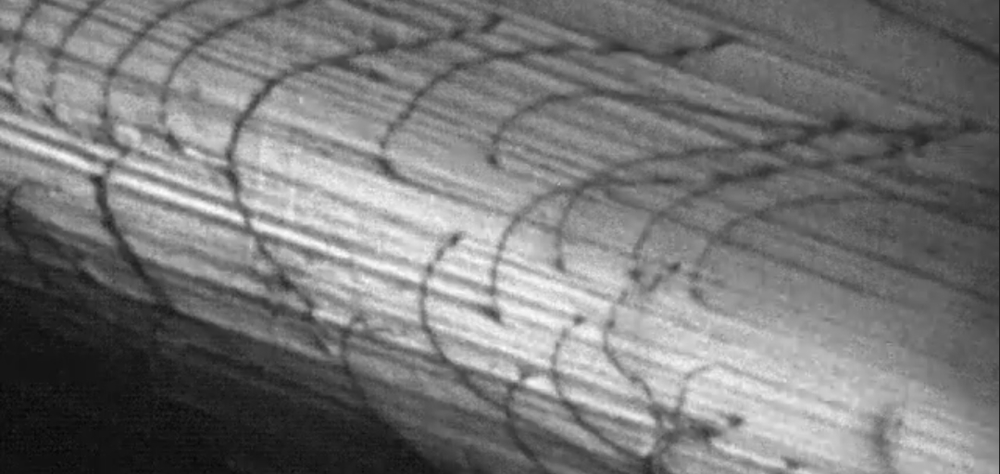

My academic career was filled with genuinely interdisciplinary coursework (aside from the MSE classes I took as an undergrad): a year of Chemistry, Organic Chemistry, Physical Chemistry, Physics, a year of linear circuit analysis, EE classes in signals and systems, electromagnetics, digital circuits, solid state devices, semiconductor processing, electrical characterizations, optoelectronics, a heavy dose of mathematics, a couple of computer science classes, a statics ME class, a continuum mechanics AAE class, a structural CE class, and two philosophy classes—one of which was the philosophy of language.
This broad technical background has given me a unique lens for problem solving. Having spent 26 years as a software developer added yet another cross-domain challenge to the mix. And over the past three years, exploring LLMs has become one of the most fascinating intellectual journeys I've ever taken. As I shifted from using AI in coding workflows to learning how AI works, I find myself improvising ideas in a space where no one fully understands the mechanics yet. This freedom is enabled because there's no pressure to be right, only the excitement of possible discovery. The reason I bring up my academic background is to highlight how I've been able to approach the study of analogy with a unique perspective. I can pull from past well-known challenges that have been solved to inform my current approach.
I'm guessing this current landscape in the study of analogy within embedding spaces must've been similar to the landscape before scientists and engineers understood the mechanics of dislocations in metals before 1934.
In the 1920s and early 1930s, metallurgists knew that metals deformed plastically at stresses orders of magnitude lower than theory predicted for perfect crystals. They could see slip lines on polished surfaces and measure the dramatic difference between theoretical and actual strength, but they didn't know how the atomic lattice was allowing it to happen.
A perfect crystal should have required breaking every bond across an entire plane simultaneously — an energetically impossible feat at observed yield stresses. The field threw everything at the wall: "mosaic structures," internal stress fields, "Verhakungen," glissile defects…
Then, in 1934, three independent researchers — Egon Orowan, Michael Polanyi, and Geoffrey Ingram Taylor — published papers within months of each other that finally cracked the puzzle. They introduced the concept of the dislocation: a line defect where an extra half-plane of atoms terminates inside the crystal. Plastic deformation didn't require breaking an entire plane of bonds at once. The lattice could slip sequentially along a moving line, breaking and reforming only a few bonds at a time. The theoretical strength paradox dissolved almost overnight.
What strikes me most when I look back at that period is how long the field lived in that uncomfortable space — surrounded by good data, clever but incomplete ideas, and a stubborn mismatch between theory and reality — until the right primitive finally appeared.
That’s the feeling I recognize right now in the study of analogy within embedding spaces. We can see impressive analogical performance in frontier models, yet the underlying mechanics — how proportional relational correspondence actually emerges and propagates through the high-dimensional lattice of discrete index signals — remains strangely opaque. Plenty of partial ideas are being thrown against the wall. Some will probably fall away. Others might turn out to be early hints. But the field still feels like it’s waiting for its own 1934 moment.
I've begun to view each embedding vector not as a simple point in high-dimensional space, but as a discrete index signal — an ordered sequence of values where the index position itself carries structural and relational meaning.
From this perspective, the "glue" that enables analogy may not come from simple dot-product attention alone. Instead, it could emerge from pairwise convolution between these discrete index signals (or structured waypoint sub-signals within them).
Just as a dislocation allows a crystal lattice to slip at low stress by enabling sequential, localized bond adjustments rather than global failure, pairwise convolution of discrete index signals could provide a low-energy mechanism for structure-preserving relational mappings across distant domains.
This is not about adding dynamic resonance or temporal waves. It is a static, index-aligned operation: taking two discrete index signals and computing how their patterns align across positions. The result of that convolution — its strength, shape, or peak locations — could reveal the quality and fidelity of the analogical correspondence.
When applying the Kernel Reduction Operator (KRO) to an analogy, we obtain a compact sequence of tokens that forms the relational kernel. One practical way to prepare these kernels for pairwise convolution is the following:
Sequence-preserving approach
Keep the KRO kernel as a short ordered sequence of token embeddings and perform pairwise 1D convolution (or cross-correlation) directly between the two sequences. This preserves the ordered, index-aligned nature of the signals and allows detection of localized alignments or “glides” across positions.
At present, it is unclear whether this sequence-preserving approach will best reveal the hypothesized low-energy proportional mappings, or whether some other method will prove more effective. The sequence-preserving version appears more aligned with both the “discrete index signal” premise and the sequence-preserving nature of the KV cache. Empirical testing on real bridging analogies will be the only way to determine which method produces more informative convolution responses.
If this framing holds, it suggests a different way to probe the latent lattice: treat embeddings as signals, apply classical convolution techniques (possibly analyzed in the s-domain via Laplace transforms or in the frequency domain via FFT), and look for the minimal waypoint kernels that produce clean, low-cost relational glides.
This is where my journey currently sits — not with firm conclusions, but with a promising primitive that bridges my training in materials defects, discrete signal processing, and the philosophy of relational meaning. The coming sections will explore this idea further: how discrete index signals might be extracted or defined, what pairwise convolution could look like in practice, and whether this approach can help illuminate the still-mysterious mechanics of analogy in embedding space. In future sections, I plan to do a deep dive into the numerics and linear algebra involved, including possible analysis in the s-domain using Laplace transforms — drawing from classical Signals and Systems methods.
I still have no clue whether this hypothesis has anything substantial to add to the field. It may turn out to be another clever but incomplete idea thrown against the wall. Either way, the discomfort of not knowing feels familiar — and productive. The loop continues to widen.
Mental Stack + DJ · Part of an ongoing, public experiment in hybrid human-in-the-loop discovery. Feedback, test cases, or variant prompts welcome.